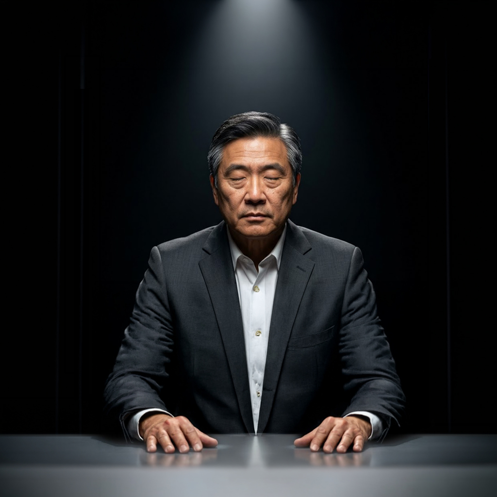
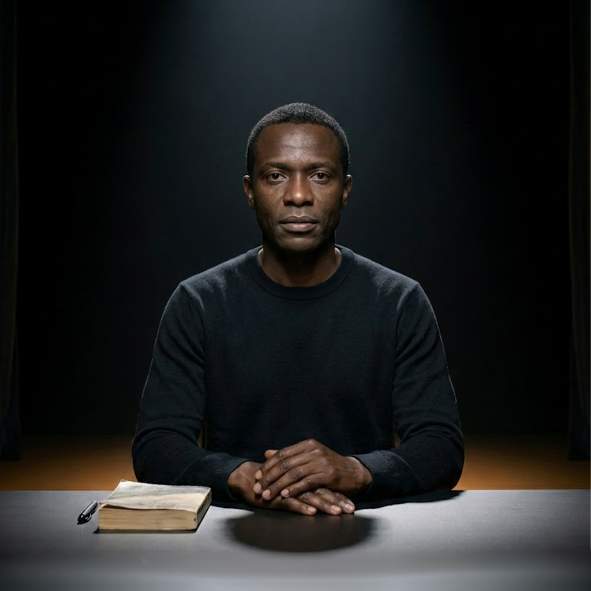
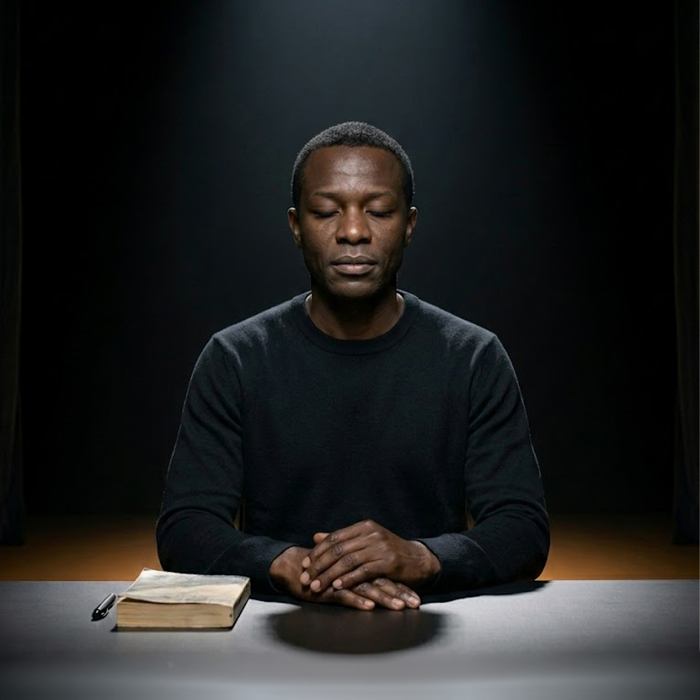

THE GAUNTLET
THE GAUNTLET
1. Find an Idea
Don't have an idea yet? Sit down with Ms. Ivy, our custom AI agent, to uncover an unmapped market gap and build a concept from scratch.
Get a tailored concept blueprint.
Nine judges. Nine executive producers. A TV show on top, proprietary IP doing the work.
Your report is ready, and the EPs in the corridor have seen your panel.
Or stop by any EP's office below. They have seen what the judges said.
Choose your starting line. Find a gap, fix your pitch, or face the panel.
Don't have an idea yet? Sit down with Ms. Ivy, our custom AI agent, to uncover an unmapped market gap and build a concept from scratch.
Get a tailored concept blueprint.
Already have a rough concept? Meet with our AI Executive Producers backstage to tear it apart, find the flaws, and fix it.
[ Pitch the EPs ]Get a pitch readiness scorecard.
Think your strategy is bulletproof? Step straight into the Chamber and face nine brutal AI judges for the ultimate verdict.
[ Enter the Chamber ]Get your official viability report.
Each one walked the Gauntlet end-to-end. Pick any deliverable to see exactly what paid members produce - the EP reports, the judge findings, the verdict. Free to read. No signup.
Want to walk through a sample yourself? Browse the full sample library →
Nine specialists, one at every door along the hall, prepping you as you pass. Stop at any of them. Keep walking. The Chamber is at the end.
Want the specialists to speak to your idea directly?

"If you do not have an idea yet, that is what I am here for. Gaps are where new ideas live. I help you find them."

"I find what's already out there, where your idea can work, where to focus first, and where else the same mechanic could live. Finding something nobody else has found yet is still my favorite part."
"I read your idea against twenty years of patterns. I tell you which one yours fits. What worked. What killed it. Where your variant sits. Honest. Not unkind."

"People buy emotion and justify with logic. I tell you what your customer actually wants to feel, then I tell you which other EP turns that into a logo, a post, a pitch. You need us all."

"Most people kill their idea before they make it real, not because the idea was bad, but because they never figured out who to call. I am here so that does not happen to you."
"Most marketing sounds like marketing. Mine doesn't. That gap is what I figured out."

"I dress the truth up every day for clients. I resent every minute of it. On this platform I do not have to soften it."
"I tell you what is not working on the page. Not what is wrong with you. There is a difference."

"I tell you which three judges to face, what they're going to ask, and how to walk in like you've already been there. Let's go."
The hall opens. Nine judges, seated. Three will evaluate your idea. Six will chime in. The lights are on.







When clients finish with the judges, they pick one of two next moves.
The verdict, the composite score, the recommendation, the panel findings. Downloadable as PDF or Word. The artifact you walk out with.
See a finished sample →The EPs have your panel report now. Wren can take you to the patent office, Carol can sharpen the audience the panel said was too broad, Ms. Ivy can ground the evidence gap the judges flagged. Every office addresses what the panel saw. Walk the corridor with their findings in hand. The next pass scores higher. We track the delta.
Walk the corridor →A direct session with a single EP. Real deliverables, no full Gauntlet.
The standard Gauntlet evaluates broad market viability across eight dimensions. If you already know your market but face a specific legal, technical, or messaging hurdle, bypass the judicial panel entirely. Book an isolated consultation with a single Executive Producer for targeted, execution-ready assets.
A business professor or technical founder does not always need an elevator pitch; sometimes they just need to know if someone else built their product first. Wren skips the marketing narrative and runs clinical prior-art screening against active patent databases.
Instead of paying a boutique firm $1,500 for an initial patent search, utilize Wren to stress-test your claims and map your regulatory route before involving formal counsel.
Book a Consult →